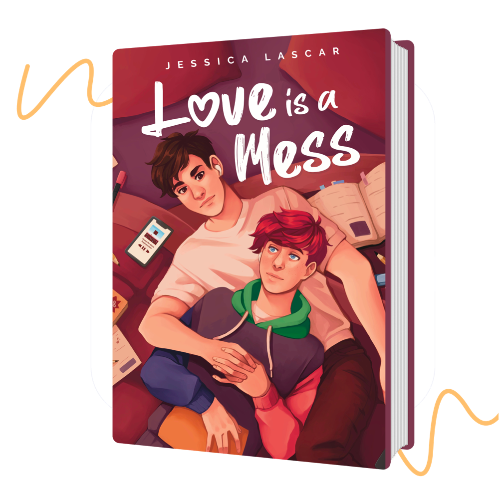
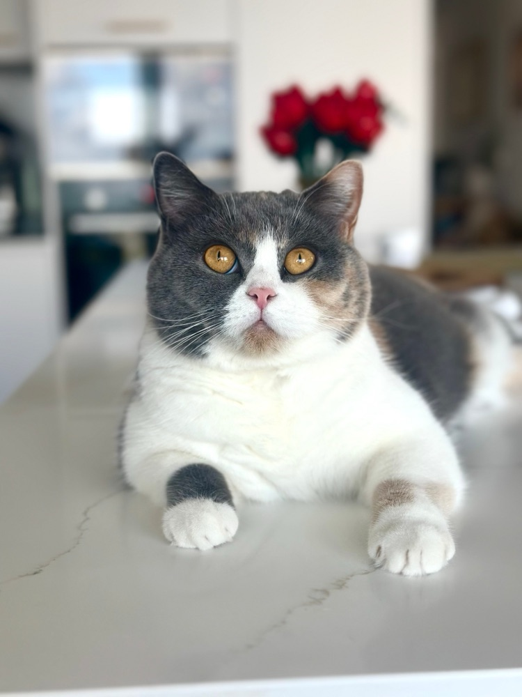
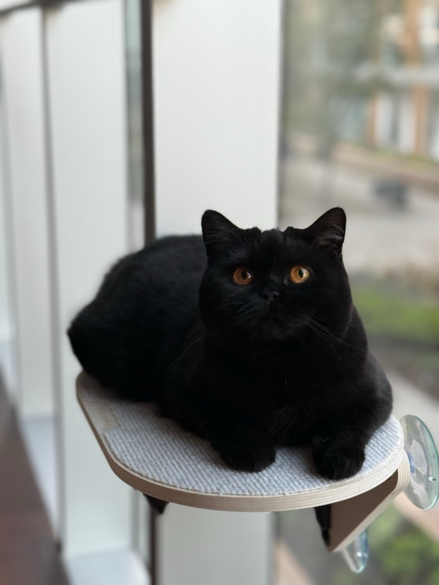
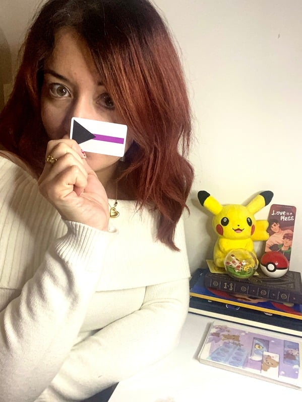
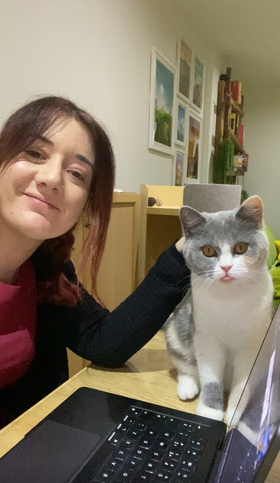
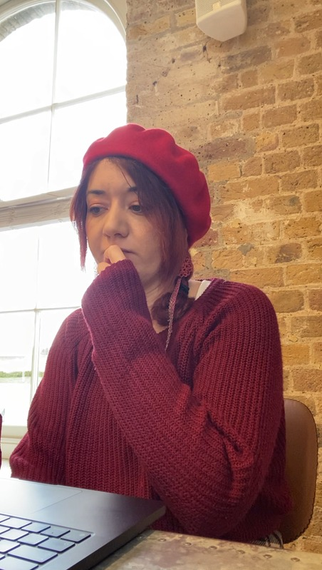
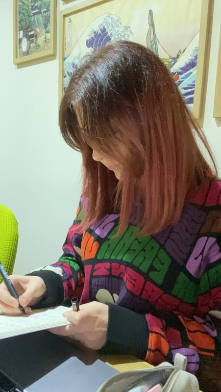
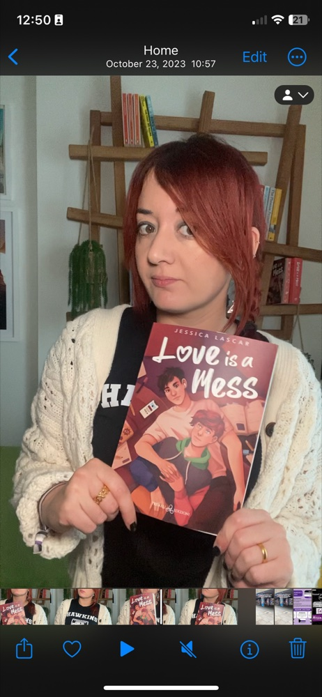

Hello, I am Jessica!

We May Be Fractured
A Queer coming-of-age with a touch of romance that explores the complexities of love, identity, grief, and the true meaning of home.
Eighteen-year-old Aaron is on the brink of fleeing London for Australia, hoping to honour his late sister’s dream. But on the eve of his departure, a community service sentence derails his plans, pulling him into an unintentional journey of self-discovery.
As Aaron navigates love, comes to terms with his demisexuality, and redefines the true meaning of home, he finds that sometimes, the most challenging journeys are the ones that lead us back to ourselves.

Love is a Mess
Love isn’t just heart-flutters and fairy tales, but a beautiful mess waiting to unfold...
Daniel’s routine post-school shifts at a riverside café on the Thames are shaken up by a regular visitor who always leaves doodles on his coffee cups. The artist? Nolan—a mysterious boy with a past full of secrets and a family that even he struggles to understand.
As Daniel gets swept up in the whirlwind of first love, he delves deeper into Nolan’s complex world. But can he help Nolan face his inner demons while navigating the highs and lows of their romance?
About me
Born in Boston (USA) 🇺🇸 and raised in Naples (Italy) 🇮🇹, I’ve lived a life full of movement, spending time in Japan 🇯🇵, the Netherlands 🇳🇱, Germany 🇩🇪, and the UK 🇬🇧. This has broadened my perspective and deepened my appreciation for different cultures, shaping my view of myself as a citizen of the world.
Writing has always been my outlet, a way to process and express the complexities of identity and belonging. This passion was rekindled during the pandemic, leading to the publication of my first YA novel in Italy, Love is a Mess, which won the Italian Wattys Award in 2021.
Having been a Londoner for the past 11 years, I’m inspired by the city’s diversity to explore more LGBTQ+ 🏳️🌈 themes in my work, particularly focusing on the asexual spectrum, which reflects my demisexuality.
When I’m not writing, I channel my creativity into digital product design for the fintech industry. In my free time, I’m on a quest to master the art of sourdough bread, occasionally dabble in crafting jewellery, and fulfil my duties as the chief tin opener for my two cats.







